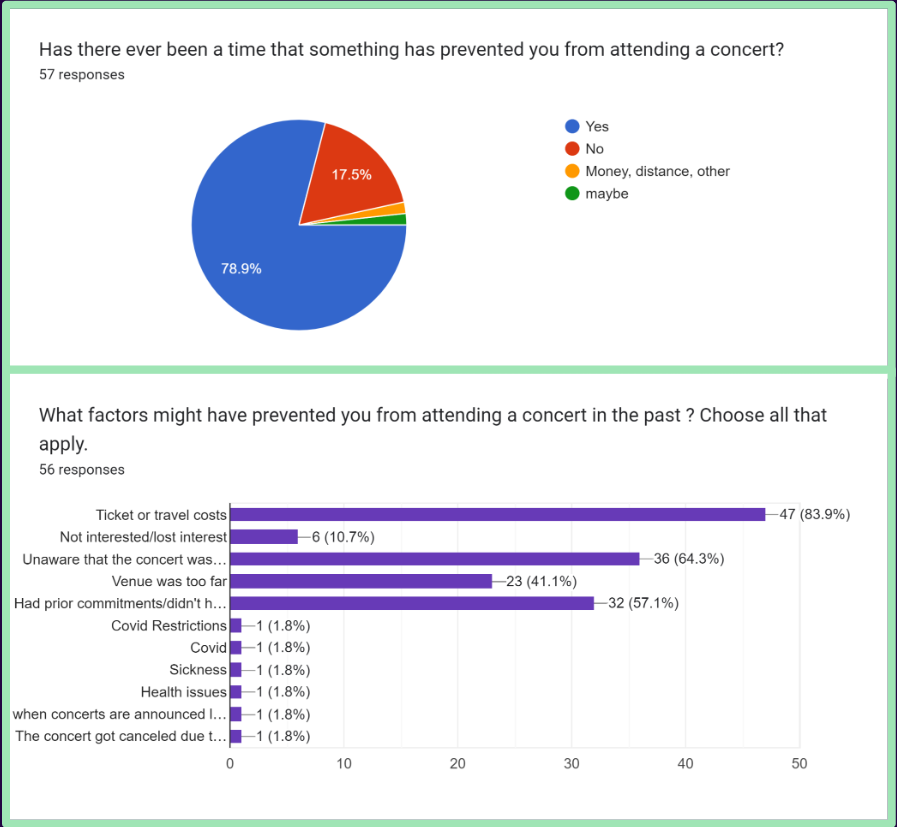
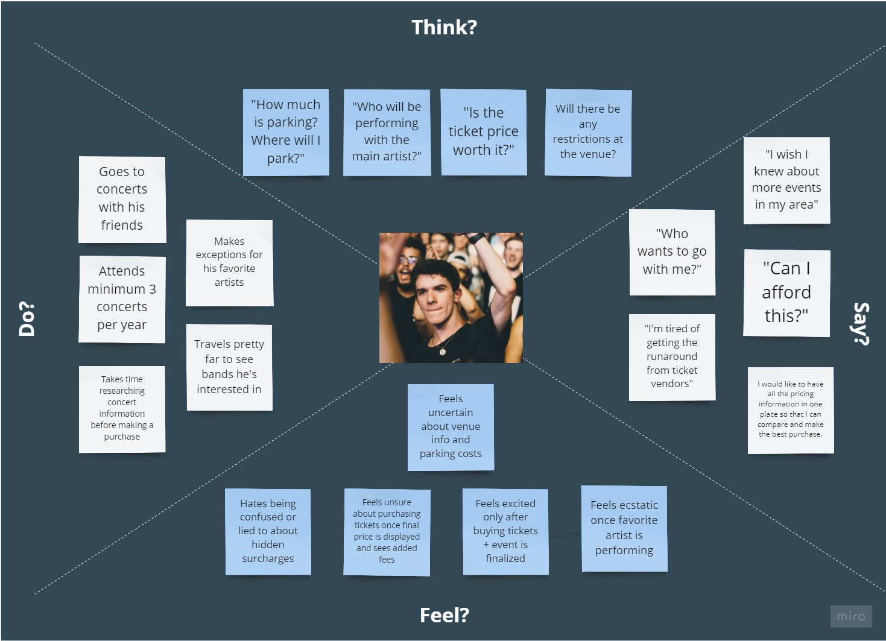
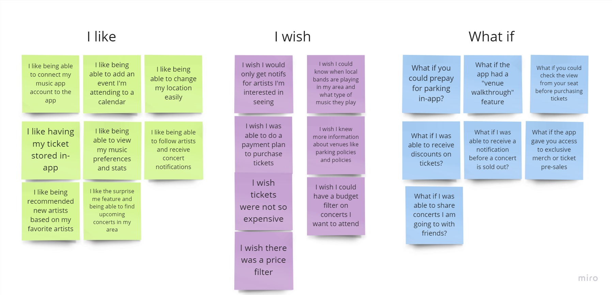

Echo is a concert event tracking application that aims to streamline the concert planning experience by providing concertgoers with favorite artists, venue information, and transparent pricing details.
Summary
Echo Concerts & Events is a project that was designed to bring awareness to users about concerts and live music venues in their area. By conducting user research and usability tests on our prototypes, we were able to create an easy to use app that keeps users updated with music events.
Achievements
Conducted user research, usability testing, collaborated with with a team, designed presentation and created low and high fidelity prototypes ,Problem
Concertgoers often have trouble when trying to buy tickets, research venues, discover new music and finding events. Many find themselves frustrated at hidden fees, confused about venue policies, or lost when looking for information on smaller, local events.
Solution
We believe that by creating a more transparent, accessible, and easy to use app for concertgoers, we will increase awareness and attendance while helping users achieve a more enjoyable and streamlined concert planning experience. The design implemented was intuitive of user problems by requesting music preferences in the beginning and providing local venue and concert information to concertgoers.
Overview
Tools
Miro
Figma
Trello
Google Slides
Google Docs
Timeline
Overall: 3 weeks
Discovery & Research: 1 week
Design & testing: 2 weeksMy Team and Role
UX UI designer
UX research
Collaborated with a team of three UX UI Designers
My Design Process
User Research
In order to begin our research, we created a proto-persona to display the type of individual that might potentially be interested in using a concert tracking application. We decided to interview individuals with similar interest or background in order to make a connection and gain valuable insight to design Echo.
Interviews

We conducted five user interviews to learn how people discover concerts and events in their area and what steps they might take to improve the discovery process. Our interview plan consisted of 14 open-ended questions and two follow-up questions.
Our objectives were:
▪ Discover the relationship and history the user has with attending and researching concerts.
▪ Discover the pain points and preferences of the user when buying tickets, exploring, or going to concerts.
▪ Discover what is most important to the user regarding having an easy and satisfying concert planning experience.
We gained insight into users' various issues when attending a concert, learned what optimizes the concert experience, and why concerts create such a bonding experience. We based our design decisions on this research to make the most engaging and enjoyable experience for users.
Surveys
We also developed a survey to obtain a better understanding of our targe audience and released it on several platforms. We surveyed 57 participants ages 18 to 60 who attended an average of 3 concerts a year. We were able to identify a major pain point based on the responses.
▪ A majority of participants indicated that they did not attend a concert because they were unaware of it occurring
▪ Cost of concert was also a contributing attendance factor
▪ Social media brought concert awareness to 83.9 participants

Affinity Diagram
After interviewing our users, we created an affinity diagram to categorize the top pain points users experience and also decipher valuable insight. Creating an affinity diagram is valuable to organize data and be able to recognize patterns or common ideas about different subjects.
User Empathy Map
Once we acquired a better understand backed by our research methods, we composed an empathy map to better target our potential site users. The user empathy map assisted in our objective of creating a better product with a positive engagement.

▪ Gets a great experience/memories with friends
▪ Gets to see favorite artists live
▪ Knows what to expect about an event after doing extensive research
▪ Finding out at checkout that tickets are much more expensive than the website said initially
▪ Uncertainty about venue policies and safety procedures
▪ Struggles to discover who will perform with the main artist
▪ Struggles to find info about events in his area
Definition and Ideation
Overview
Problem Stament
We believe that by streamlining and simplifying the researching and ticket buying experience for concert goers we will achieve an increase in concert awareness, attendance and enjoyment.
Ideation
We began our ideation process by creating an I like, I wish, What If diagram. We wanted to conceptualize our ideas and brainstorm by classifying and contextualizing. This method allowed our team to later create a value matrix and decided on the most achievable and desirable design outcomes.
